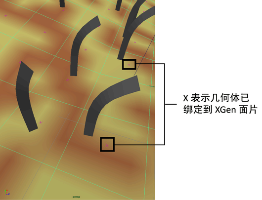

XGen 面片定义生成基本体的几何体区域。创建描述时，面片将绑定到选定多边形网格的面。面片提供有关几何体的信息，例如面 ID、面大小、位置和面法线，然后描述将这些信息用于放置和控制基本体。集合 (.xgen) 文件存储有关面片的信息（请参见管理 XGen 文件和目录）。
在“大纲视图”(Outliner)中，面片由此图标  进行标识。在场景视图中，将显示绑定到 XGen 面片的区域，并在几何体面的中心处显示洋红色 X。面片没有需要修改的属性。可以使用“绑定面”(Bind Face)菜单选项，更改绑定到面片的多边形面。
进行标识。在场景视图中，将显示绑定到 XGen 面片的区域，并在几何体面的中心处显示洋红色 X。面片没有需要修改的属性。可以使用“绑定面”(Bind Face)菜单选项，更改绑定到面片的多边形面。

面片引用（首选项）
创建描述时，Maya 会将 xgenPref 属性（“附加属性”(Extra Attributes)部分）添加到网格的 polygonShape 节点。这些属性存储有关绑定网格的初始状态信息。此信息可确保在几何体变形时基本体生成密度保持一致。
例如，基本体生成基于网格上每单位面积（对于 XGen，单位是 cm）的基本体数量。如果几何体变形更改面大小，网格上生成的基本体数量也会发生更改。如果没有 xgenPref 属性存储的信息，随着几何体变形，基本体生成中的那些更改会导致帧之间发生不必要的弹出。
重要说明
- 在“大纲视图”(Outliner)中选择面片时，标签为“边界框角”(bBox Corner)的属性将出现在 Maya“属性编辑器”(Attribute Editor)中。请勿修改这些属性。
- 请勿在描述之间移动面片。而是将描述导入到具有相同拓扑的几何体中。确保“导入集合或描述”(Import Collections or Description)窗口中的“包含面片绑定”(Include patch bindings)选项处于启用状态。
- 请勿在面片之间移动导向。
- 如果对描述进行批渲染，必须使用“文件 > 导出面片以进行批渲染”(File > Export Patches for Batch Render)导出面片。请参见 XGen 编辑器的“文件”菜单。